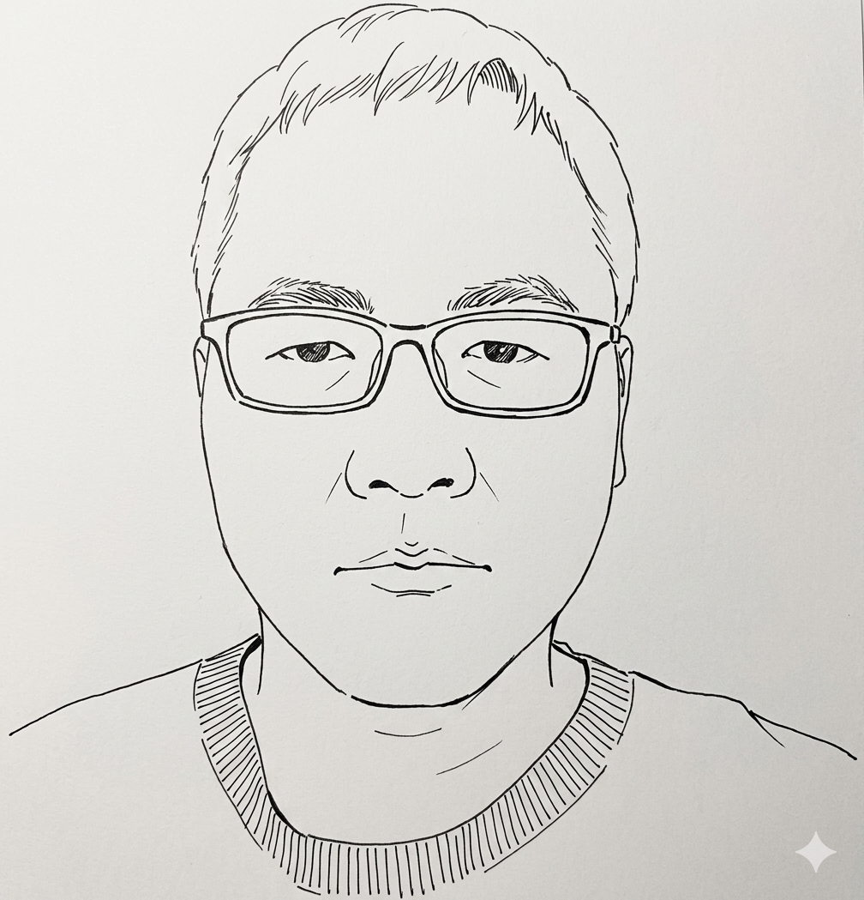

黄峰 John Huang
设备管理 · 数字化转型 · AI + 制造探索者 Equipment Management Expert · Digital Transformation Lead · AI & Manufacturing Explorer
15 年高端制造经验（面板/医疗器械/工程机械），从涂布工艺设备专家一路走到集团级数字化负责人，再到 K12 AI 教育公司的 AI 产品经理。既主导过覆盖 9 大事业部、40+ 工厂的 EAM 系统落地，也独立交付过"原型设计 → 知识图谱 → Qwen 35B 私有化部署 → 微服务上线"的完整 AI 产品。信条很简单：真正有用的数字化，源于对业务的深刻理解，而不是对技术的追逐——在制造与教育两个行业，我都在证明这件事。 15 years in high-end manufacturing (panel display, medical devices, construction machinery) — from coating process engineer to group-level digital transformation lead, then AI Product Manager at a K12 education company. I have led EAM rollout across 9 BUs and 40+ factories, and independently shipped a complete AI product from prototype to knowledge graph, private Qwen 35B deployment, and production microservices. My conviction: meaningful digital transformation comes from deep business understanding, not technology chasing — and I have proven it in both manufacturing and education.
01 · 职业履历 Professional Experience
K12 AI 教育公司（To B，与学校合作提供数字作业/数字考试/学情分析）。独立负责智学本产品的全链路交付：墨刀原型 → 知识图谱 → Qwen 35B 私有化部署 → 三个微服务上线（题目智能/学情掌握度/辅导方案），全流程 Vibe Coding，教育数据全程不出内网。 K12 AI education company (To B, digital homework/exams/learning analytics for schools). Independently delivered the Smart Learning Book product end-to-end: prototyping → knowledge graph → private Qwen 35B deployment → three microservices in production, all via Vibe Coding with data fully on-premise.
[ 展开详情 ] [ View Details ]
- AI 服务底座: 可插拔微服务架构——题目智能（双知识图谱+VLM，已上线 SaaS）、学情掌握度（可解释确定性算法）、辅导服务（定制学习方案+PDF 报告），LiteLLM 统一模型网关记账。 AI Service Base: Pluggable microservices — question intelligence (dual knowledge graph + VLM, live on SaaS), mastery (explainable algorithms), tutoring (personalized plans + PDF reports), unified LiteLLM gateway.
- 试卷结构化标注平台: 从 0 交付——整本切题、RapidOCR 识别、KaTeX 公式编辑、YOLOv8 批量预标注+人工复核，三角色质检工作流。 Labeling Platform: 0-to-1 delivery — workbook segmentation, RapidOCR, KaTeX formula editing, YOLOv8 pre-labeling with review, 3-role QC workflow.
- AI 基础能力: Qwen3.6-35B-A3B / Qwen3.8-27B / bge-m3 全本地化部署；自部署 Dify 问答机器人；定义"确定性算法做掌握度、LLM 做洞察生成"的人机分工原则。 AI Infrastructure: Fully on-premise model stack (Qwen3.6-35B-A3B / Qwen3.8-27B / bge-m3); self-hosted Dify chatbot; defined the human-AI division principle — deterministic algorithms for mastery, LLM for insights.
主导集团设备管理体系的数字化重构。统筹 9 大事业部、40+ 工厂的 EAM 系统推广，实现设备业务 100% 在线化；率先在制造领域落地 LLM+RAG 维修 AI 助手，方案采纳率达 63%；制定集团设备管理制度与考核规则，设备付现费用率每年降低约 8%。 Led the digital transformation of Sany Group's equipment management. Orchestrated EAM rollout across 9 BUs, 40+ factories for 100% online coverage. Pioneered LLM+RAG maintenance AI assistant with 63% adoption rate. Established group-wide equipment management standards, reducing annual cash expense rate by ~8%.
[ 展开详情 ] [ View Details ]
- EAM 系统建设: 重构保养、维修、台账、备件等核心模块，打通 SAP 折旧归集与 MES OEE 计算，实现数据闭环。 EAM Platform: Rebuilt core modules, integrated SAP depreciation and MES OEE for data closed-loop.
- AI 维修助手: 基于 LLM+RAG 构建故障知识库，智能推荐维修方案，采纳率 63%，降低对高资历工人的依赖。 AI Maintenance: Built LLM+RAG knowledge base for fault diagnosis, 63% adoption rate.
- 闲置资产调拨: 利用 Dify 构建多维度评价模型，促进 AGV/机器人等高价值资产流转，2025 年实现约 2000 万元闲置设备调拨，压降 CAPEX。 Asset Matching: Dify-powered evaluation model for smart idle asset redeployment, achieving ~¥20M in 2025.
- 数据治理: 清洗台账数据 30w+ 条，数据清洁度提升 40%+。 Data Governance: Cleaned 300K+ equipment records, improved data quality by 40%+.
- 标准化体系: 发布集团首版设备管理岗位任职资格标准，统筹全集团技工等级认证；主导设备管理"四化"项目（数字化、标准化、精益化、智能化），梳理形成 12 个核心流程、60 余条管理规则，成为全集团统一执行标准。 Standardization: Published first job qualification standards and led group-wide worker certifications. Drove "Four Modernizations" initiative: 12 core processes, 60+ management rules as group-wide standards.
负责高端医疗器械生产环境的从 0 到 1 建设。主导 GMP 洁净厂房交付、核心光刻设备的 IQ/OQ/PQ 三级验证，以及 O2/Ar/N2/SF6 等特种气体系统规划，确保 100% 审计就绪。 Led the 0-to-1 construction of high-end medical device manufacturing environments. Managed GMP cleanroom delivery, IQ/OQ/PQ validation for precision lithography tools, and specialty gas system planning, ensuring 100% audit readiness.
[ 展开详情 ] [ View Details ]
- GMP 厂房交付: 主导厂房布局、搬入定位及安装调试，确保人/物动线符合 GMP 标准。 GMP Delivery: Led layout, relocation, and commissioning to GMP standards.
- 3Q 设备验证: 独立完成 Suss 光刻机、MicroWriter ML3 等高精度设备的安装/运行/性能确认。 3Q Validation: Completed IQ/OQ/PQ for Suss lithography and MicroWriter ML3 tools.
- 特气系统: 规划 O2/Ar/N2/SF6 管道布局，建立定检与安全管理制度，满足半导体/医疗级洁净度。 Gas Systems: Planned O2/Ar/N2/SF6 pipeline layouts with inspection and safety protocols.
- 维保体系: 制订 PM 预防性维护计划，规划委外维保与备件库存策略，100% 审计就绪。 Maintenance: Established PM schedules, vendor management, and spare parts strategy.
专注于半导体显示制程的良率攻关与工艺稳定性提升。主导光刻关键尺寸（CD）与膜厚的 CPK 深度管控（1.33+，高端客户产品至 1.67），通过 DOE 实验解决 OLED 信赖性等重大异常；主导高感度光刻胶等新材料评估，实现显著降本。 Focused on yield improvement in semiconductor display manufacturing. Managed deep CPK control (1.33+, up to 1.67 for premium clients) for critical dimensions, resolved major OLED reliability issues via DOE, and drove significant cost reduction through new material evaluation.
[ 展开详情 ] [ View Details ]
- CPK 过程控制: 利用 Minitab 监控膜厚与 CD，将关键指标 CPK 从不达标提升至 1.33+。 CPK Control: Used Minitab to monitor thickness/CD, improving CPK from failing to 1.33+.
- 重大异常攻关: 运用 8D/DOE 方法解决 ESD 异常、Lens Mura、OLED 信赖性等行业级工艺问题。 Troubleshooting: Resolved ESD, Lens Mura, and OLED reliability issues using 8D/DOE.
- 材料评估降本: 主导高感度光刻胶、二供显影液评估，缩短 Takt Time 并降低 BOM 成本。 Cost Reduction: Evaluated high-sensitivity photoresist and alternative developers to cut BOM costs.
- 客户响应: 召集厂商优化材料特性，突破设备极限满足重点客户高精度需求。 Customer Response: Coordinated with vendors to break equipment limits for key customer specs.
参与国内顶级面板产线从 0 到 1 的崛起。负责首条 Photo Inline 产线从组装到 30K 量产爬坡，将 Uptime 从 75% 提升至 95%，Takt Time 从 65s 压缩至 53s。 Participated in the 0-to-1 rise of top-tier domestic panel production. Led Inline line from assembly to 30K ramp-up, improving Uptime from 75% to 95% and compressing Takt Time from 65s to 53s.
[ 展开详情 ] [ View Details ]
- 产线建设: 部门首条 Inline 设备从 0 到 30K 全程量产负责人，含设备规格制定、日本培训及验收。 Line Build: Led first Inline equipment 0-to-30K ramp-up, including specs, Japan training, and acceptance.
- 设备效率: Uptime 75% → 95%，Takt Time 65s → 53s，达行业领先水平。 Efficiency: Uptime 75% → 95%, Takt Time 65s → 53s, industry-leading performance.
- 良率提升: Poor Coating 发生率从 15 次/月降至 1 次/月，Rework 率从 2817 PCS/月降至 135 PCS/月。 Yield: Poor Coating from 15/month to 1/month, Rework from 2817 PCS/month to 135 PCS/month.
- 标准化: 负责部门 ISO 文件撰写与审核，建立首套标准化体系，担任 TPM 对外窗口及培训讲师。 Standardization: Authored ISO documentation, built first standardization framework, served as TPM liaison.
02 · 独立项目 (Vibe Coding) Independent Projects (Vibe Coding)
EMS-Claude
企业级设备管理平台，集成 LLM 智能诊断与飞书机器人。 Enterprise equipment management platform with LLM-powered diagnostics and Lark integration.
PDCA-with-AI
AI 驱动的问题解决工作流 Agent Skill，支持 SMART 校验与多维表格同步。 AI-driven problem-solving workflow Agent Skill with SMART validation and Bitable sync.
VSM Skill
交互式价值流图 Agent Skill，支持自动渲染 SVG 流程图与精益指标计算。 Interactive Value Stream Mapping Agent Skill with automatic SVG rendering and Lean calculations.
Hermes Workspace
基于 Agent 的个人效率中枢，实现 LLM Wiki 知识库管理、微信公众号自动化发布及深度行业调研。 AI Agent-powered productivity hub featuring LLM Wiki management, automated WeChat publishing, and deep industry research workflows.
03 · 教育背景与资质 Education & Certifications
北京交通大学 Beijing Jiaotong University
材料化学 · 本科（211 / 双一流）· 2006 — 2010 Materials Chemistry · B.Sc. (Project 211 / Double First-Class) · 2006 — 2010
PMP 项目管理专业人士 PMP — Project Management Professional
PMI 认证 · 2024 年 7 月（3A 优异成绩） PMI Certified · Jul 2024 (3A Achievement)
Anthropic AI 认证（4 项） Anthropic AI Certifications (4)
Claude 101 · AI Fluency · Agent Skills · Claude Code in Action · 2026 年 3 月 Claude 101 · AI Fluency · Agent Skills · Claude Code in Action · Mar 2026
04 · 精选文章 Selected Writing
- AI维修助手：在制造业落地的真实数据 AI Maintenance Assistant: Real Data from Manufacturing Deployment
- AI落地最大坑：应采尽采 The Biggest Pitfall in AI Deployment: Collect Everything
- MES反思：从FPD到工程机械的落差 MES Reflections: The Gap from FPD to Construction Machinery
- EMS开源系统：Vibe Coding的制造实践 Open-Source EMS: Vibe Coding Meets Manufacturing Practice
更多文章见公众号「制造人的AI手记」 More articles on WeChat Official Account「制造人的AI手记」
05 · 个人宣言 Manifesto
"我致力于连接'硬科技'制造业与'软科技'AI 领域。真正的数字化转型不源于写代码，而源于对业务的深刻理解与规则定义。" "I believe in bridging the gap between 'Hard Tech' manufacturing and 'Soft Tech' AI. True digital transformation comes from understanding the floor and defining the rules."